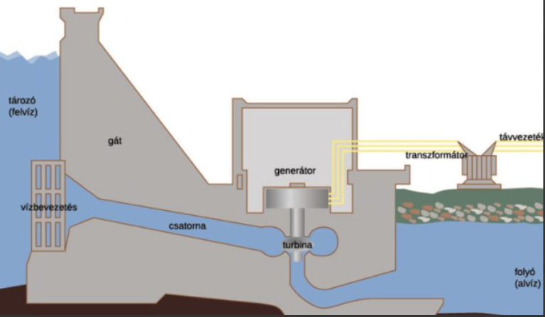

A víz nem csupán éltető elem, a földi élet létrejöttének és fenntartásának alapja, de fontos energiaforrás is. Igaz, valójában elsősorban a Nap energiáját közvetíti: a Nap az, ami energiájával folyamatos mozgásban tartja. Tulajdonképpen ezt a mozgási energiát tekintjük vízenergiának.
Vízenergiaként az áramló víz mozgási energiája hasznosítható közvetlenül, mechanikai energiává, valamint az utóbbit elektromos árammá tovább alakítva.
